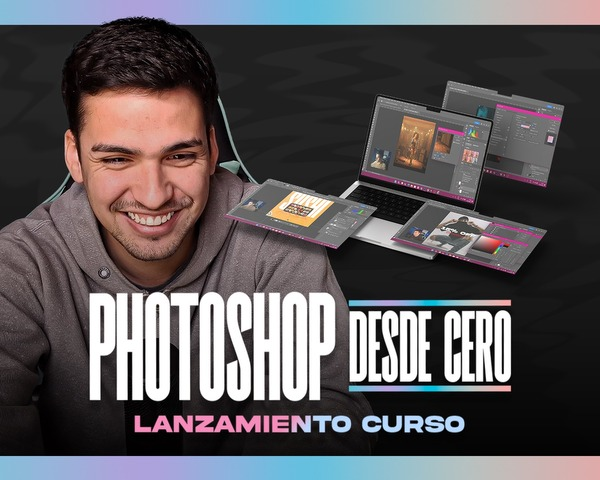

Nunca usaste Photoshop o querés una base más sólida.
Photoshop desde cero
Entendé las herramientas y empezá a componer con criterio, desde tu primer archivo hasta tu portfolio.
- Herramientas, capas y máscaras
- Tipografía, color y composición
- Edición, fotomontajes e IA
- Proyecto final y portfolio en Behance
Clases grabadas · Acceso de por vida
US$ 31,00USD
PayPal · Binance
Elegir Photoshop Ver temario y requisitosSin experiencia previa. Computadora con Photoshop instalado e internet.